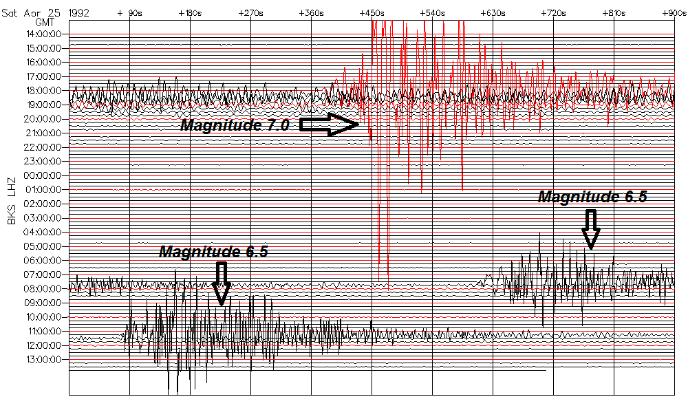
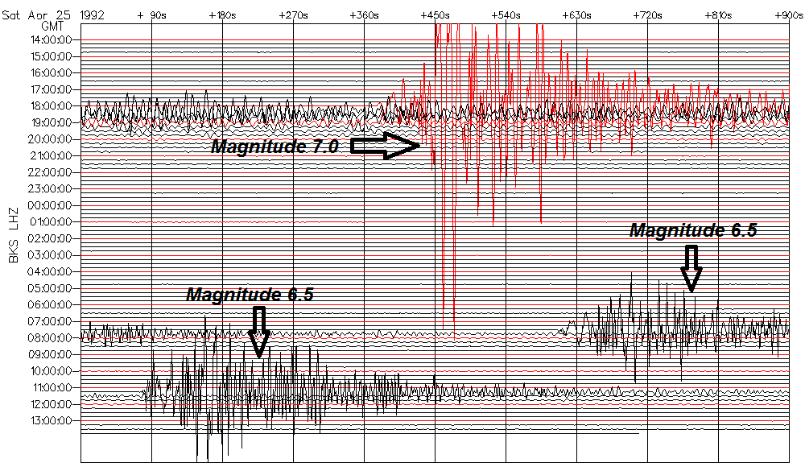

The Seismograph shows one Magnitude 7.0 quake, and two Magnitude 6.5 quakes. How does Magnitude 7.0 compare to Magnitude 6.5?

adnarel (devdataprod-005)
The Seismograph shows one Magnitude 7.0 quake, and two Magnitude 6.5 quakes. How does Magnitude 7.0 compare to Magnitude 6.5?

When comparing sizes of two quakes, use the relationship between wave Amplitude (A) and Magnitude (M):
Log10(A) is proportional to M
Compare sizes of the Magnitude 7.0 and 6.5 quakes:
10^7.0 / 10^6.5
## [1] 3.162
The Magnitude 7.0 quake is 3.2 times larger than a Magnitude 6.5 quake, in terms of the seismograph wave amplitudes.
When comparing strengths of two quakes, use the relationship between Energy (E) and Magnitude (M) of an earthquake:
Log10(E) is proportional to 1.5*M
Compare strengths of the Magnitude 7.0 and 6.5 quakes:
10^(1.5*7.0) / 10^(1.5*6.5)
## [1] 5.623
The Magnitude 7.0 quake is 5.6 times stronger than a Magnitude 6.5 quake, in terms of destructive energy.
Let's make an app that compares the Sizes and Strengths of two earthquakes from their Magnitudes.